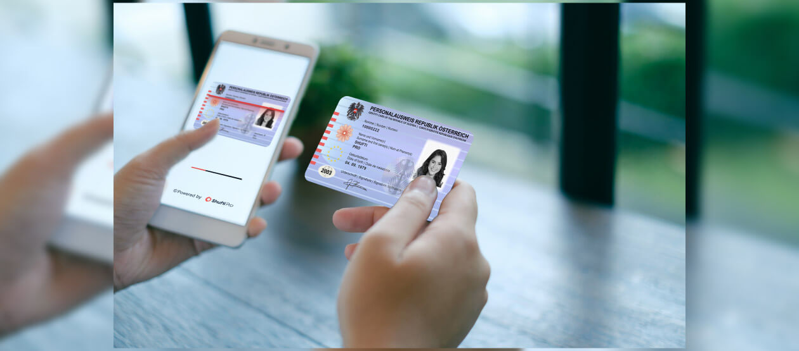

How We Work
At CeyloanBot, we empower Sri Lankans with secure crypto-backed loans and investments by combining advanced technology with transparent processes.
Step 1: Registration & ID Verification
ID verification is crucial to keep our platform safe and trusted. To verify your identity, use our Telegram bot by sending:
- A clear photo of your government-issued ID.
- A selfie holding your ID.
- A selfie with your Telegram user ID visible in the CeyloanBot Telegram bot screen.
For extra security, we recommend optionally providing additional verification via email to ceyloanbot@proton.me including:
- Your full name and age
- ID photo and selfies as above
- Any additional contact info and address for sending funds
- Payment transaction hash and proof of payment
- Confirmation message from admin (if you withdrew off Telegram)
- Proof of address (utility bill or similar)
- Links to your social media accounts
This step is optional but strongly recommended to protect your investment if your Telegram account is lost or deleted. You can complete this at registration or later.
Step 2: Applying for Loans / Investments
Use our Telegram bot to submit loan or investment applications easily. Provide the requested details, including loan amount, duration, and payment method. Our team processes applications promptly, typically within 24-48 hours.

Step 3: Fund Transfer & Security
We accept both crypto and bank transfers for your convenience. After your payment is confirmed, our admins will finalize your loan or investment. We use industry-standard security practices to protect your funds and personal information.

Step 4: Support & Communication
Our Telegram bot is your main communication channel for support, updates, and questions. We also provide assistance via WhatsApp and Instagram. Stay connected to manage your loans and investments smoothly.